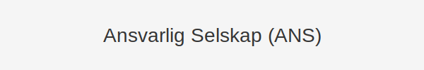
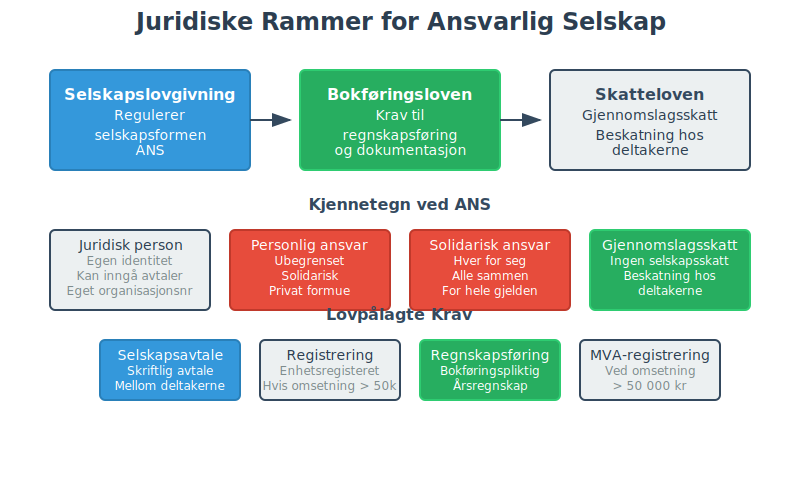
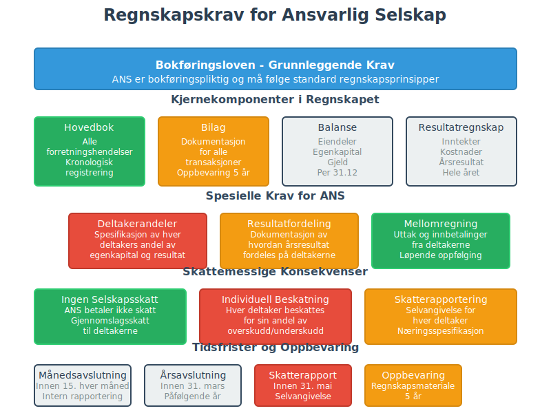
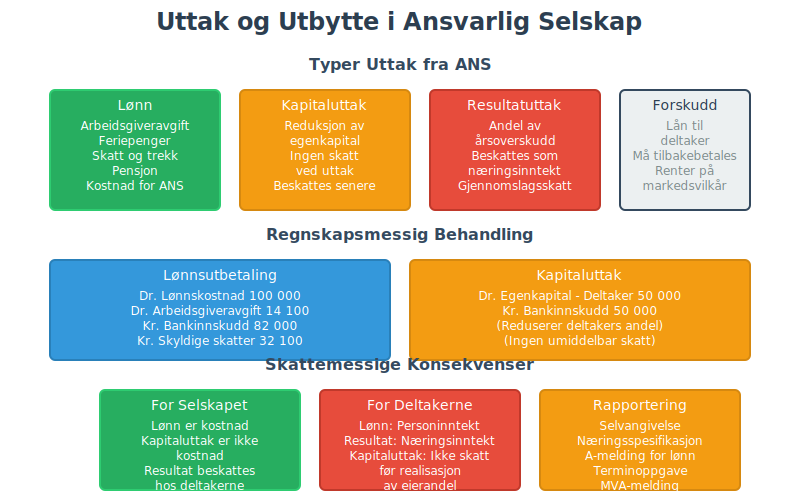

For en oversikt over ulike selskapsformer i Norge, se Selskapsform.
Et ansvarlig selskap (ANS) er en selskapsform hvor to eller flere deltakere driver virksomhet sammen med ubegrenset solidarisk ansvar. Denne formen gir fleksibilitet i drift og skatt, men krever nøye vurdering av risiko og solid forståelse av regnskapsmessige konsekvenser.
Denne selskapsformen omtales også ofte som DA (Delt Ansvar). Les mer i vår artikkel om Ansvarlig Selskap og Delt Ansvar.
Hva er et Ansvarlig Selskap?
Ansvarlig selskap er en del av organisasjonsform regulert av selskapslovgivningen. ANS skiller seg fra andre selskapsformer ved at deltakerne personlig kan heldes ansvarlig for selskapets samlede forpliktelser.
Nøkkelpunkter:
- To eller flere deltakere (fysiske eller juridiske)
- Ingen krav til minimum aksjekapital
- Ubegrenset solidarisk ansvar for gjeld og forpliktelser
- Overskudd beskattes direkte hos deltakerne (gjennomslagsskatt)
- Må registreres i Enhetsregisteret hvis omsetning > 50 000 kr
Juridiske Rammer og Lovgrunnlag

ANS er regulert av selskapslovgivningen og må følge bokføringsloven. Selskapet har egen juridisk identitet, men deltakerne hefter personlig og solidarisk.
Registrering og Formelle Krav
| Krav | Beskrivelse | Tidsfrist |
|---|---|---|
| Selskapsavtale | Skriftlig avtale mellom deltakerne | Før oppstart |
| Enhetsregisteret | Registrering hvis omsetning > 50 000 | Innen 7 dager |
| MVA-registrering | Hvis omsetning > 50 000 kr årlig | Innen 7 dager |
| Arbeidsgiver | Ved ansettelse av arbeidstakere | Før ansettelse |
| Firmaattest | Bestilling av offisielt dokument fra Foretaksregisteret | Ved behov |
Regnskapsmessige Forhold
Bokføringsplikt og Regnskapskrav
ANS er bokføringspliktig etter bokføringsloven og må føre:
- Hovedbok med alle forretningshendelser
- Bilag og dokumentasjon jf. bilagsloven
- Årsavslutning med balanse og resultatregnskap
- Spesifikasjon av fordringer og gjeld

Skattemessige Konsekvenser
Gjennomslagsskatt betyr at:
- Selskapet betaler ikke selskapsskatt
- Deltakerne beskattes for sin andel av overskuddet
- Underskudd kan fradragsføres hos deltakerne
- Deltakerne må levere selvangivelse for sin andel
Kjennetegn og Struktur
| Aspekt | Ansvarlig Selskap (ANS) |
|---|---|
| Ansvarstype | Ubegrenset solidarisk |
| Minimum kapital | Ingen |
| Antall deltakere | Minimum 2 |
| Skatteordning | Gjennomslagsskatt |
| Juridisk person | Ja (begrenset) |
| Krav til selskapsavtale | Ja |
| Årsregnskapsplikt | Ja, forenklet |
Selskapsavtale - Kritiske Elementer
En grundig selskapsavtale må regulere:
Grunnleggende Bestemmelser
- Formål og virksomhetsområde
- Deltakernes andeler og innsluttskrav
- Ansvarsfordeling og beslutningsmyndighet
- Resultatfordeling og utbyttepolitikk
Drift og Styring

- Daglig ledelse og representasjon
- Signaturrett og prokura
- Møtestruktur og beslutningsprosess
- Rapportering og informasjonsplikt
Uttreden og Oppløsning
- Uttredelsesrett og -plikter
- Verdsettelse av andeler ved uttreden
- Konkurranseklausuler og taushetsplikt
- Oppløsning og avvikling
Fordeler med ANS
Skattemessige Fordeler
- Direkte fradrag: Underskudd kan fradragsføres direkte hos deltakerne
- Ingen dobbeltbeskatning: Overskudd beskattes kun hos deltakerne
- Fleksibel resultatfordeling: Kan avvike fra eierandeler med avtale
- Avskrivninger: Deltakerne kan få direkte fradrag for avskrivninger
Operasjonelle Fordeler
- Lav etableringskostnad: Ingen krav til minimumskapital som i aksjeselskap
- Rask oppstart: Færre formelle krav enn AS
- Fleksibel organisering: Enkel beslutningsstruktur
- Kredittilgang: Personlig heftelse kan gi bedre kredittvilkår
Ulemper og Risikoer
Ansvarsrisiko
- Ubegrenset ansvar: Privat formue kan benyttes for å dekke selskapets gjeld
- Solidarisk ansvar: En deltaker kan hele ansvar hvis andre ikke kan betale
- Kreditorvern: Kreditorer kan kreve privat formue
Operasjonelle Utfordringer
- Komplekse avtaler: Krever grundig selskapsavtale for å regulere intern fordeling av risiko
- Avhengighet: Sårbar for konflikt mellom deltakere
- Begrenset kapitaltilgang: Vanskelig å hente ekstern kapital
Regnskapsmessig Behandling
Egenkapital og Innbetaling
Deltakernes innbetaling:
Dr. Bankinnskudd XXX
Kr. Egenkapital XXX
Resultatfordeling
ANS må spesifisere hvordan årsresultatet fordeles mellom deltakerne:
| Fordelingsgrunnlag | Beskrivelse |
|---|---|
| Eierandeler | Etter avtalt eierandel |
| Arbeidsandeler | Etter arbeidsinnsats |
| Kapitalandeler | Etter kapitalinnbetaling |
| Kombinert | Blanding av flere kriterier |
Uttak og Utbytte

- Uttak behandles som fradrag i egenkapital
- Lønn til deltakere krever arbeidsgiveravgift
- Utbytte beskattes som kapitalinntekt
Sammenligning med Andre Selskapsformer
| Selskapsform | Ansvarstype | Min. Kapital | Antall deltakere | Skatteordning |
|---|---|---|---|---|
| ANS | Ubegrenset solidarisk | Ingen | ≥ 2 | Gjennomslag |
| AS | Begrenset (aksjekapital) | 30 000 kr | ≥ 1 | Selskapsskatt |
| ENK | Ubegrenset personlig | Ingen | 1 | Personlig |
| DA (Delt ansvar) | Begrenset til andel | Ingen | ≥ 2 | Gjennomslag |
Praktiske Råd før Oppstart
Vurder nøye om ANS passer for din virksomhet:
Risikovurdering
- Ansvarsanalyse: Er ubegrenset ansvar akseptabelt?
- Forsikring: Vurder profesjons- og ansvarsforsikring
- Kapitalvurdering: Kan deltakerne dekke potensielle forpliktelser?
Valg av Deltakere
- Økonomisk soliditet: Velg medeltakere med solid økonomi
- Komplementære ferdigheter: Ulike kompetanser gir synergieffekt
- Tillitsforhold: Grunnlag for langsiktig samarbeid
Juridiske Forberedelser
- Selskapsavtale: Engasjer advokat for utarbeidelse
- Forsikring: Kartlegg behov for ansvars- og bedriftsforsikring
- Skatterådgivning: Få veiledning om skattemessige konsekvenser
Regnskapsmessige Utfordringer
Internregnskapsføring

- Andelsregnskaper: Separat regnskap for hver deltaker
- Mellomregning: Håndtering av forskudd og uttak
- Kostnadsfordeling: Fordeling av felles kostnader
Årsavslutning
ANS må utarbeide:
- Årsregnskap med balanse og resultatregnskap
- Spesifikasjon av deltakernes andeler
- Resultatfordeling dokumentert i noter
- Oppbevaring av regnskapsmateriale i 5 år
Når ANS er Rett Selskapsform
ANS er særlig egnet for:
Profesjonelle Tjenester
- Advokatfellesskap og konsulentvirksomhet
- Regnskapsbyråer (Hva er et regnskapsbyrå?) og revisjonsfirmaer
- Teknisk rådgivning og engineering
Mindre Virksomheter
- Handel med lav kapitalrisiko
- Håndverksbedrifter med felles utstyr
- Startup-virksomhet med flere gründere
Kriterier for Egnethet
- Lav kapitalrisiko i bransjen
- Høy tillit mellom deltakerne
- Komplementære ferdigheter hos deltakerne
- Ønske om skattemessig fleksibilitet
Oppløsning og Avvikling
Frivillig Oppløsning
- Enstemmig beslutning av deltakerne
- Varsling til kreditorer og kontraktsmotparter
- Avvikling av eiendeler og gjeld
- Sluttutdeling til deltakerne
Tvangsoppløsning
- Konkurs ved betalingsudyktighet
- Rettslig oppløsning ved alvorlig mislighold
- Dødsfall kan utløse oppløsning
Alternativer til ANS
Delt Ansvar (DA)
For mer informasjon om delt ansvar, som begrenser ansvaret til den enkelte deltakers andel.
Aksjeselskap (AS)
Aksjeselskap gir begrenset ansvar men krever høyere kapitalkrav.
Enkeltpersonforetak (ENK)
Enkeltpersonforetak for enkeltpersoner som ønsker full kontroll.
For mer om selskapsformer, se Organisasjonsform og Selskapsregistrering.